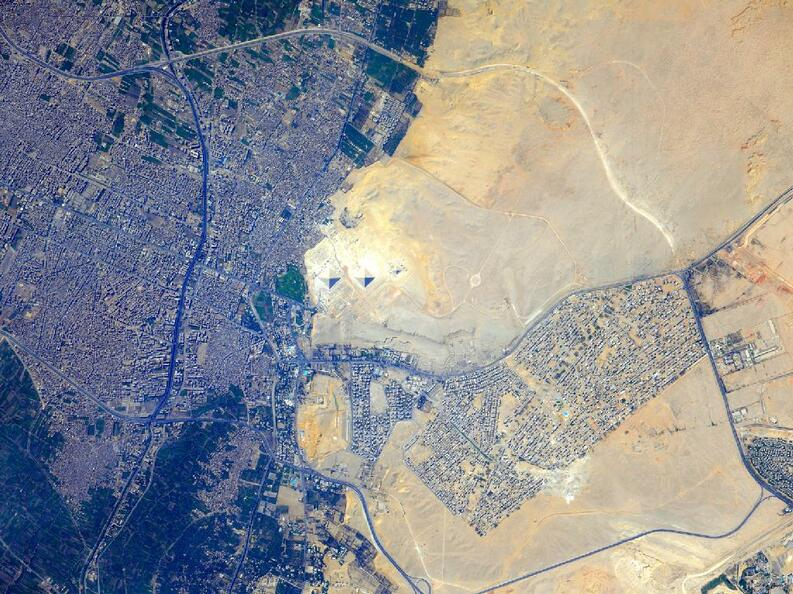

Arquitectura
El libro de Richard Halliburton, Second Book of Marvels, publicado en 1938, afirmaba que la Gran Muralla es
la única construcción humana visible desde la Luna, y la publicación de Ripley de la misma década aseguraba
algo parecido. Esta creencia ha persistido, adquiriendo un estatus de leyenda urbana. Arthur Waldron, autor de
la historia más fiable de la Gran Muralla,[cita requerida] ha especulado que la creencia puede provenir de la
fascinación con los «canales» que se creía que existían en Marte. La lógica era simple: si los terrícolas podían
ver los canales de Marte, entonces los marcianos podrían ver la Gran Muralla.

En realidad, la Gran Muralla tiene únicamente pocos metros de ancho —un tamaño aproximado al de las pistas
de las carreteras y aeropuertos— y es casi del mismo color que el suelo que la rodea. No es posible verla desde
la distancia de la Luna, y mucho menos desde Marte.
Neil Armstrong afirmó: «No creo que, por lo menos con mis ojos, hubiera alguna construcción humana visible para mí.
No he conocido a nadie que me haya dicho que ha visto la Muralla China desde la órbita terrestre.11 Le he preguntado
a mucha gente, particularmente a gente del transbordador, que han orbitado varias veces sobre China durante el día, y
aquellos con los que he hablado no la han visto». En mayo de 2004, la NASA anunció que la fotografía tomada a la Muralla
China desde el espacio no era en realidad la construcción, sino un tramo de un río entre las montañas, y reconoció
públicamente que la Gran Muralla no es visible desde el espacio sin ayuda.